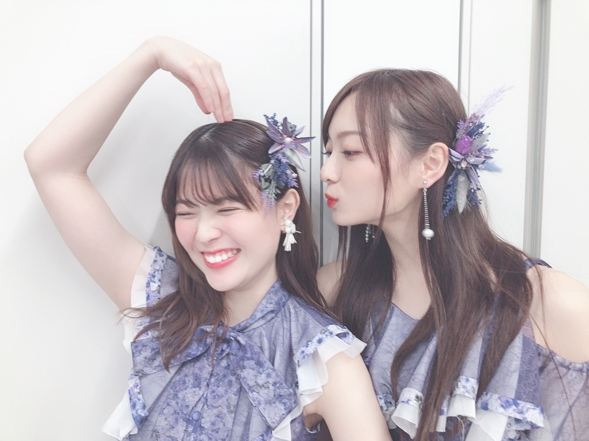
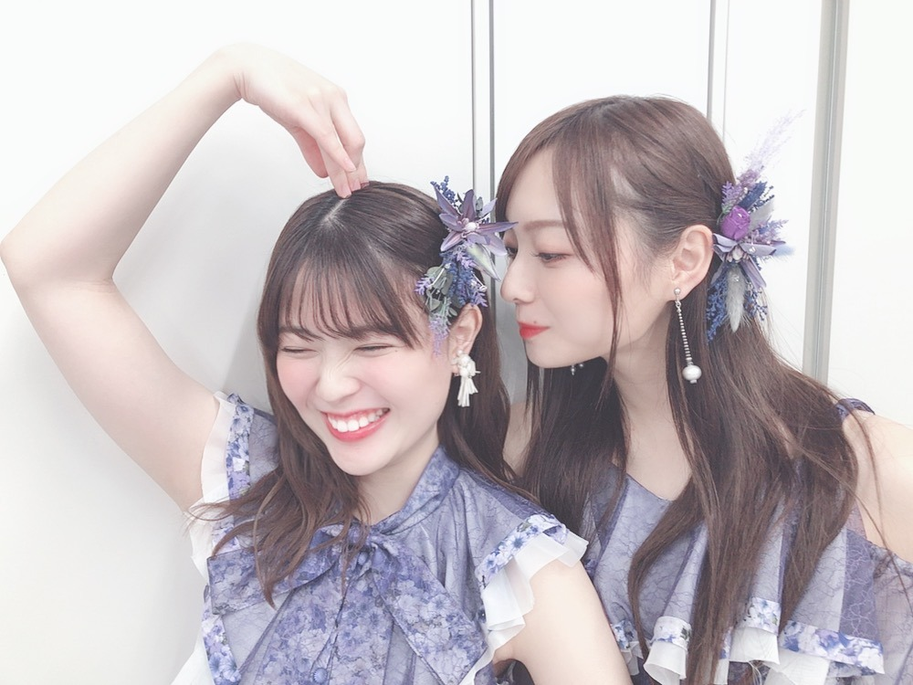
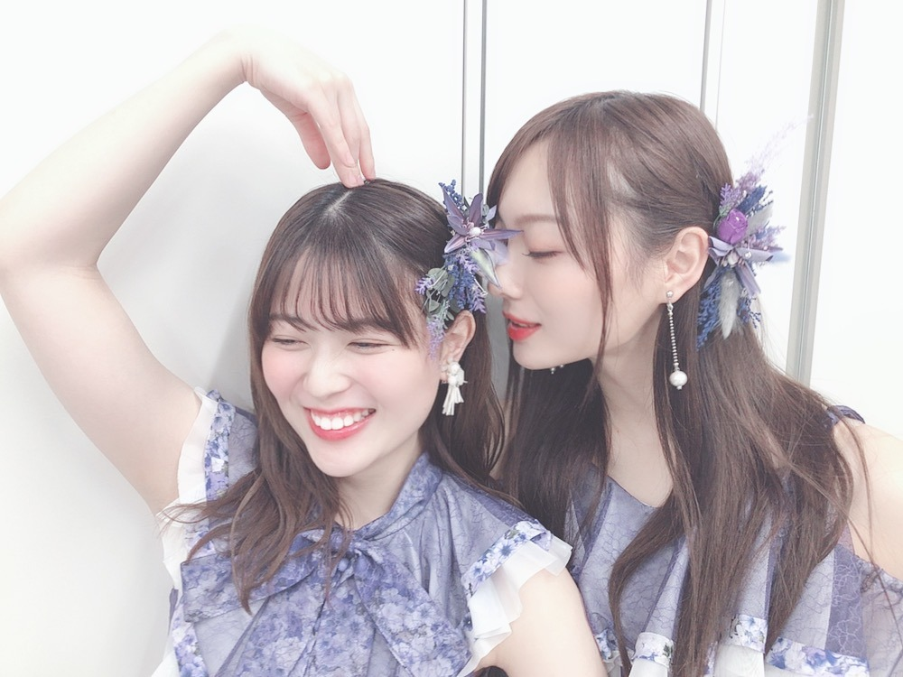
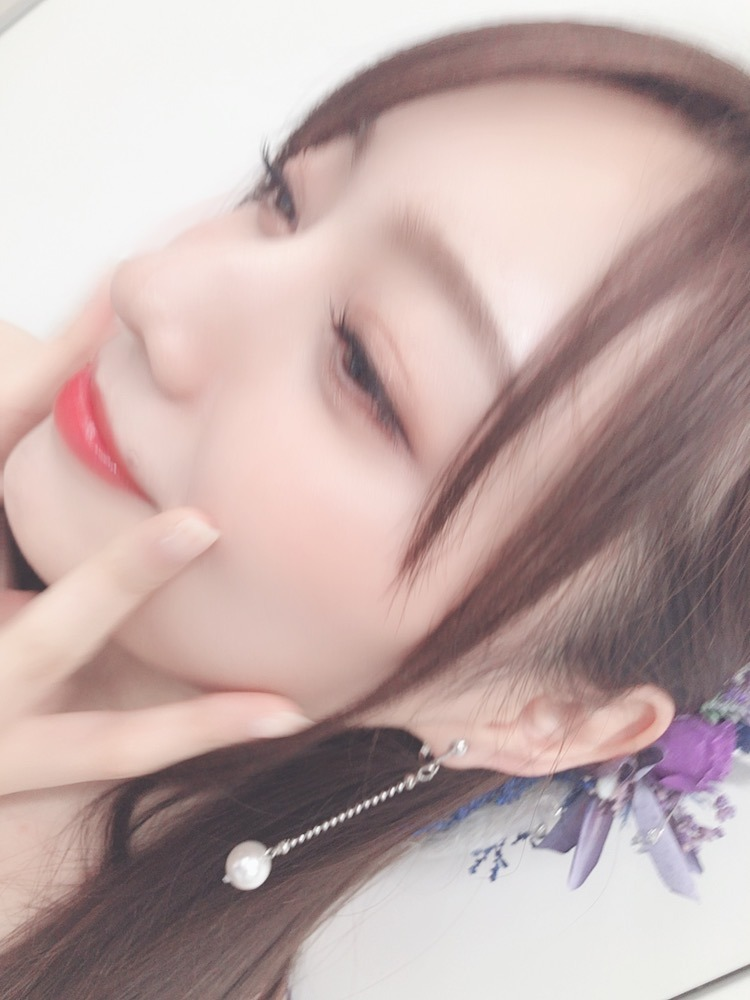

なんちゅう早さや
ピーチジョンさんのルームウェアです☀︎
着心地良くてお気に入りです〜
たくさんルームウェアがお家にあるので
ローテーションで着るのが楽しいです☀︎
可愛くてすごく惹かれるものばかり。
集めたくなりますよね〜
ミュージックステーション
ありがとうございました！
笑顔をお届けできたでしょうか。
白石さん、井上さんの
最後のMステでした。
ご一緒できて、本当に幸せでした。
しあわせの保護色、
何度歌っても何度踊っても楽しくって
カメラを意識せずみんなで円になって目を合わせて踊る振りは特に
皆で目を合わせ場の空気を感じしあわせを感じながらあの場にいてます。幸せでいっぱい。
ガールズルールも大好きな曲。
シンクロニシティは思い出でいっぱいの曲。

ちゅーってしたら

れんかちゃん笑っちゃってさ
ははは

いつもこんなんしてまする。
愛おしい。
みんなといる時間が楽しくって
ずっと続けと思います、
さり気ない会話もすごく貴重だと
後々気づくことも多々あります。
初期を思い返すことは頻繁にありますが
辛いことなんてそっちのけに出来るくらい
幸せなものをもらっています。
皆に出会えて幸せ〜！！
さてさて、
メイク関連の質問沢山頂いたので
今使ってるコスメ少し載せよかな？
毎月何冊も雑誌を読み込んだりと
コスメはすごく好きなので
その時その時で使用するものは変わりますが
今のお気に入りのラインナップ、
まとめてみますね。
もうちょと待ってね☀︎
発売中のwithも
見てくださいましたか？☀︎
私は普段全くゲームしなくてね、
全然やる気なかったのだけど
少し興味出てきてしまいました、、。
小学校の頃はゲームっ子で
ずーっとゲーム片手に生活していたのだけど
歳を重ねるにつれてゲームから遠のく生活になりました。
戦うゲームとか出来るのに憧れて
スマブラとか、、やってみたい、、
ハマるととことんハマってしまうから
それもちと怖い。
やっぱり皆様もやってるのかな？
中々思うように身動きが取れず
息苦しい日々かもしれませんが、
日々音楽にパワーをもらっています。
凄まじい力ですよね。
音楽は、生活の中に欠かせません。
常に流れています。
最近は時間があると
昔聴いていた曲を記憶を辿ってまた聴いてみたり、
新しい音楽に出逢おうと探してみたりしています♪
オススメの楽曲などあれば、
ぜひ共有しましょう〜
お家にいる事が増えましたが
私は毎日のご飯が楽しみに
レシピを考え作ることで気持ちを紛らわしています〜！
テレビをつければ元気を届けてくださる方がいて、
気持ちが落ちてしまう時は音楽があって、
美味しいものが食べられて。
一人一人の行動できっとこの先また明るい未来が待っているはずです！
みんなに会えることを楽しみに、
私も今できることを精一杯頑張ります！
私からもなにか出来ることがあればと、、
思っております。
そしてですね、
「映像研には手を出すな！」
いよいよ明日から始まりますので！
東宝の上野さんが映像研Twitterにてまとめてくださっていたので
私も便乗してお知らせさせてくださいね。
▽TV
４／５（日）24:50~ MBS毎日放送 近畿広域圏
４／６（月）25:29~ CBCテレビ 中京広域圏
４／６（月）24:57~ HBC北海道放送
４／７（月）25:28~ TBSテレビ 関東広域圏
４／８（火）25:23~ RSK山陽放送 岡山・香川
４／１１（金）25:28~ RCC中国放送 広島
▽無料配信
ひかりTV・dTVチャンネル
４／９（水）22:30~
４／８（火）22:30~ ビジュアルコメンタリー
▽見放題配信
ひかりTV VOD
４／７ （火） 深夜スタート
▽見逃し配信
TVer・MBS動画イズム
４／７（火）深夜スタート
この他詳細は公式ホームページを
ぜひチェックしてください！
https://eizouken-saikyo.com/
いや〜！ドキドキですなあ！
本当に！どうしましょうか！
感想聴きたい！です！

近いね〜
よく見えるね。
そう、最近はオレンジメイクしてます。
では。
またすぐ更新しますね。
ずっと同じことを繰り返しがちな毎日だけど
ちょっと違う方向に動いてみたら
また新しい発見。新しい気持ち。
ひとつずつ楽しみを見つけてみてます
Original：https://www.nogizaka46.com/s/n46/diary/detail/55652?ima=4940&cd=MEMBER